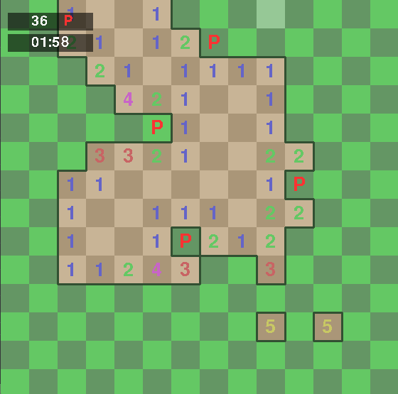
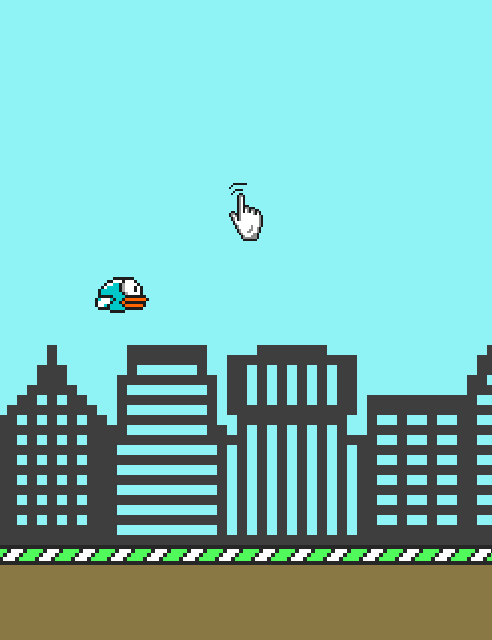
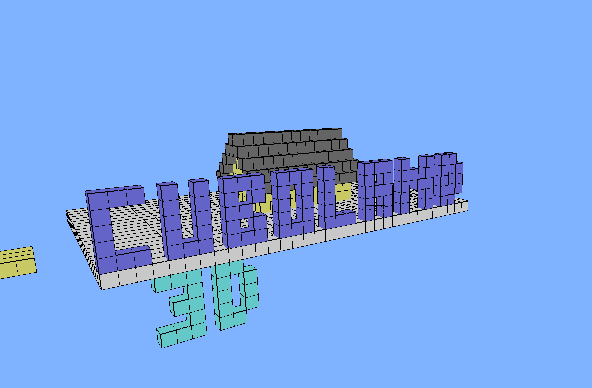
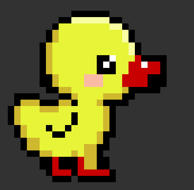
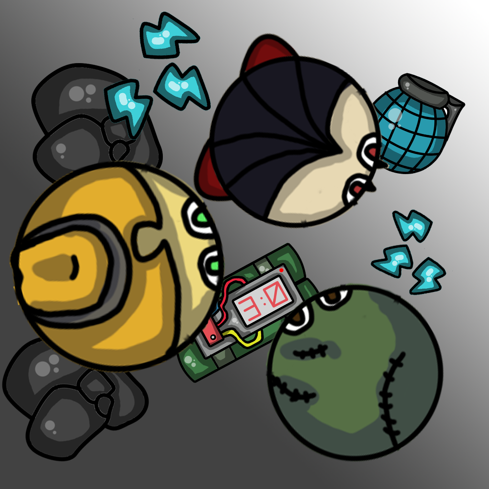

PROYECTOS






The Walking Dead
Sumérgete en un mundo de armas, zombis y mucha diversión. Corre y que no te pillen, pobre de ti si lo hacen. Te encuentras solo en una isla desértica, en la cual gobierna el caos. Tienes compañía, y digamos que no de la buena. Coge suministros y a la batalla, aquí no existe la piedad. Tu misión, sobrevivir.